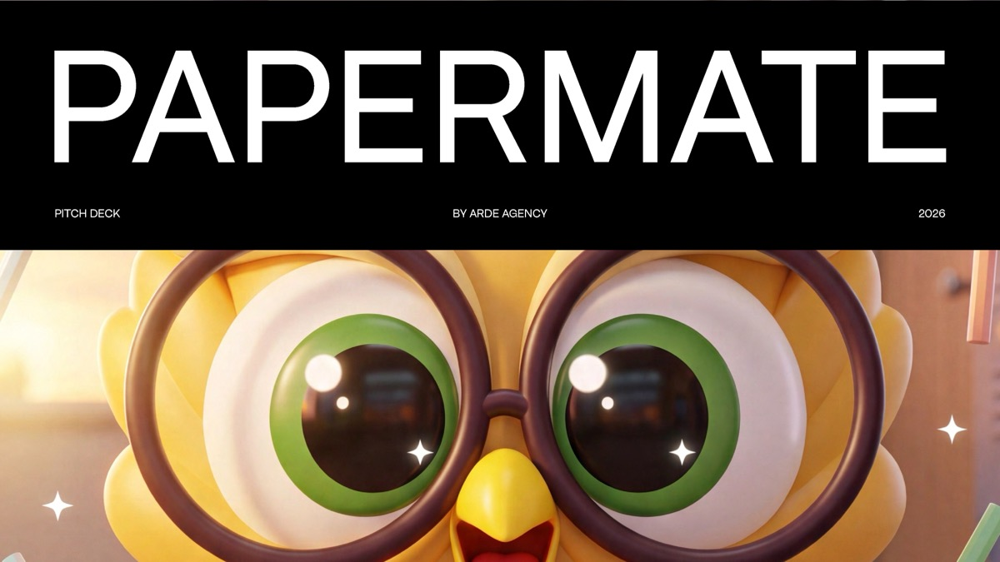
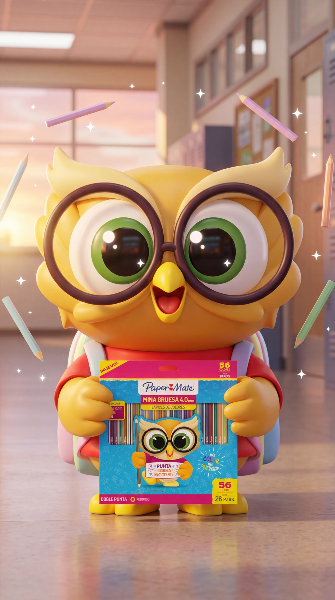
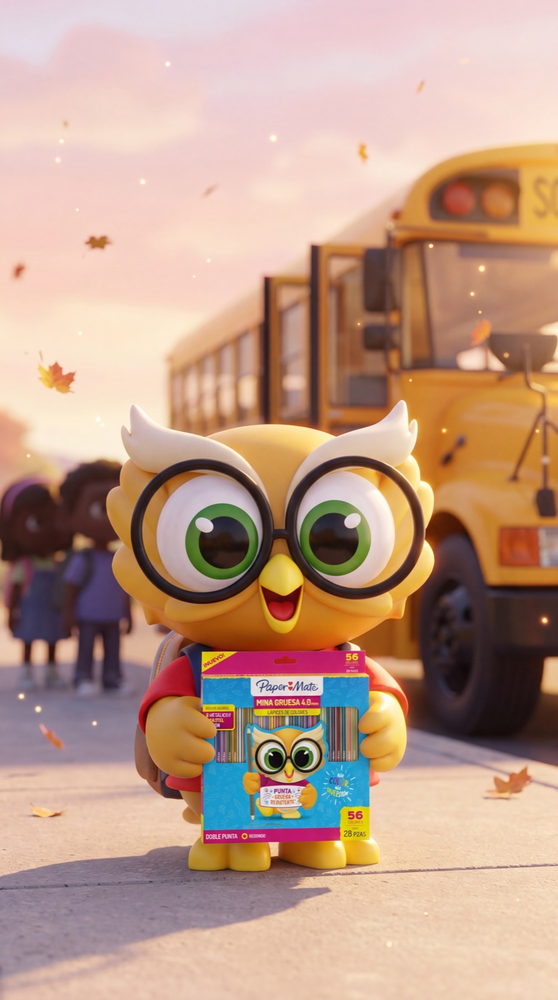
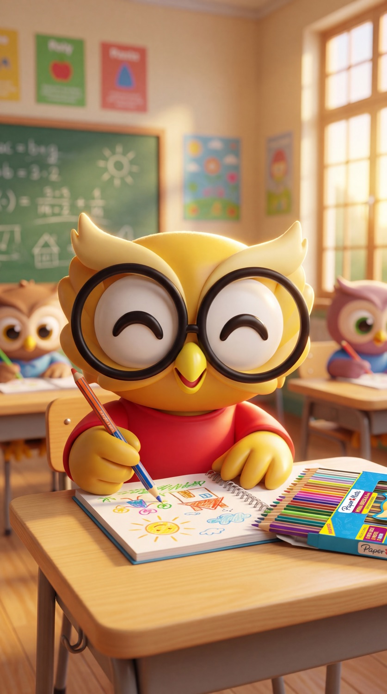
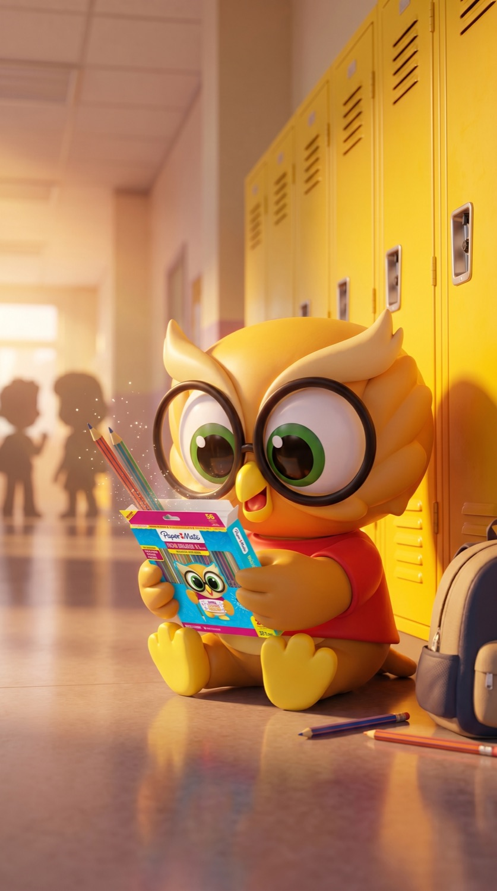
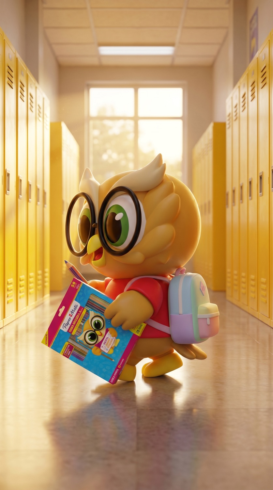

La propuesta completa del pitch para Paper Mate LATAM: una plataforma de marca de largo plazo, producida íntegramente con inteligencia artificial dirigida por ARDE.


El consumidor la reconoce, pero decide por precio, inercia o lo que recomienda el papelero. Paper Mate necesita una razón de marca para volver a ser elegida — una que una bolígrafos, gel, colores y Youth Art bajo una misma voz. Esa razón es la alegría de hacerlo a mano.
"Siente la Alegría" tiene un territorio válido, pero en LATAM no aterriza literal. Veredicto: adaptar.
Latinoamérica ya escribe a mano en todas partes. Es nuestro, y ninguna marca global puede traducirlo.
Honra el oficio · nace del producto · se siente latina. Una sola voz, sin fragmentar el portafolio.
Tu letra es tu huella. Desde ahí se abre todo el sistema de mensajes y de participación.
La estética une dos mundos. La IA crea el sistema; la emoción manda. El resultado no debe parecer una colección de renders — debe sentirse como una campaña viva, humana y propia de Paper Mate.
Y debe sentirse espontánea. La IA es el motor, pero el alma es análoga: mezclamos técnicas tradicionales hechas a mano — trazo de marcador, lettering, recortes, collage, papel real — y las llevamos a lo digital. Esa imperfección viva es la que hace que la campaña respire y nunca se sienta de fábrica.
Personas reales generadas con IA, manos, papelerías, escuelas, cuadernos, productos. Regla clave: no mostramos rostros completos.
Saúl entra como capa gráfica y emocional, no como personaje aparte. Representa lo que pasa en la imaginación cuando una mano empieza a crear.
La mano es el personaje principal.
No hay rostros completos.
Escenas humanas reales, cálidas y latinoamericanas.
Saúl se integra como capa imaginativa, no aislado.
Papelería, rótulo, cuaderno y trazo: parte del sistema visual.
Producto fiel, limpio, protagonista — nunca deformado.
La IA al servicio de la emoción, no del efecto.
Espontaneidad análoga: técnicas tradicionales a mano — trazo, lettering, collage, papel — llevadas a lo digital.
No es una lista de piezas. Es un sistema de campaña producido con IA donde cada elemento cumple un objetivo del brief.
Qué es · qué debe tener · cómo explicárselo al cliente.
Una película de máximo 1 minuto producida con IA: manos protagonistas, producto Paper Mate, papelerías LATAM y Saúl como capa imaginativa. El trazo conecta cada escena.
Planos IA reales de manos en México y Colombia: cuaderno, lista, papelería, rótulo, tarea, dibujo.
Varias manos escriben la misma palabra; ninguna letra es igual.
Dibujo infantil, colores, Saúl dentro del papel. El trazo se vuelve puente entre el mundo real y el animado.
Macro de bolígrafo suave, punta fina precisa, gel que no se corre, colores vivos, mano probando en anaquel.
Papelería de barrio, cartulina escrita, cuaderno marcado, rótulo, escritorio escolar, lista BTS.
Packshot del portafolio completo. La frase aparece escrita a mano. Saúl mira el trazo final.




El alcance completo de producción tradicional costaría 3–4×. Cabe en el presupuesto del brief gracias al pipeline de IA de ARDE — y eso responde directo al mandatorio de escalabilidad con presupuesto limitado.
piezas de producción que cubren las cinco metas del brief.
La IA nos permite construir un universo propio: personas reales sin rostros, manos protagonistas, producto perfecto, papelerías latinoamericanas, trazos vivos, contenido escalable y Saúl como la expresión imaginativa de todo lo que empieza a mano.